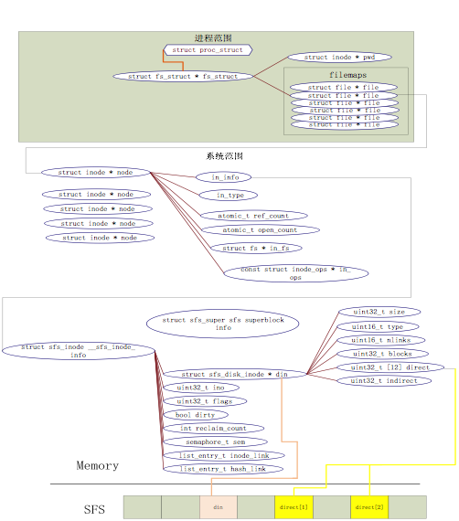

总体介绍
ucore 文件系统总体介绍¶
操作系统中负责管理和存储可长期保存数据的软件功能模块称为文件系统。在本次试验中，主要侧重文件系统的设计实现和对文件系统执行流程的分析与理解。
ucore的文件系统模型源于Havard的OS161的文件系统和Linux文件系统。但其实这二者都是源于传统的UNIX文件系统设计。UNIX提出了四个文件系统抽象概念：文件(file)、目录项(dentry)、索引节点(inode)和安装点(mount point)。
- 文件：UNIX文件中的内容可理解为是一有序字节buffer，文件都有一个方便应用程序识别的文件名称（也称文件路径名）。典型的文件操作有读、写、创建和删除等。
- 目录项：目录项不是目录（又称文件路径），而是目录的组成部分。在UNIX中目录被看作一种特定的文件，而目录项是文件路径中的一部分。如一个文件路径名是“/test/testfile”，则包含的目录项为：根目录“/”，目录“test”和文件“testfile”，这三个都是目录项。一般而言，目录项包含目录项的名字（文件名或目录名）和目录项的索引节点（见下面的描述）位置。
- 索引节点：UNIX将文件的相关元数据信息（如访问控制权限、大小、拥有者、创建时间、数据内容等等信息）存储在一个单独的数据结构中，该结构被称为索引节点。
- 安装点：在UNIX中，文件系统被安装在一个特定的文件路径位置，这个位置就是安装点。所有的已安装文件系统都作为根文件系统树中的叶子出现在系统中。
上述抽象概念形成了UNIX文件系统的逻辑数据结构，并需要通过一个具体文件系统的架构设计与实现把上述信息映射并储存到磁盘介质上，从而在具体文件系统的磁盘布局（即数据在磁盘上的物理组织）上具体体现出上述抽象概念。比如文件元数据信息存储在磁盘块中的索引节点上。当文件被载入内存时，内核需要使用磁盘块中的索引点来构造内存中的索引节点。
ucore模仿了UNIX的文件系统设计，ucore的文件系统架构主要由四部分组成：
-
通用文件系统访问接口层：该层提供了一个从用户空间到文件系统的标准访问接口。这一层访问接口让应用程序能够通过一个简单的接口获得ucore内核的文件系统服务。
-
文件系统抽象层：向上提供一个一致的接口给内核其他部分（文件系统相关的系统调用实现模块和其他内核功能模块）访问。向下提供一个同样的抽象函数指针列表和数据结构屏蔽不同文件系统的实现细节。
-
Simple FS文件系统层：一个基于索引方式的简单文件系统实例。向上通过各种具体函数实现以对应文件系统抽象层提出的抽象函数。向下访问外设接口
-
外设接口层：向上提供device访问接口屏蔽不同硬件细节。向下实现访问各种具体设备驱动的接口，比如disk设备接口/串口设备接口/键盘设备接口等。
对照上面的层次我们再大致介绍一下文件系统的访问处理过程，加深对文件系统的总体理解。假如应用程序操作文件（打开/创建/删除/读写），首先需要通过文件系统的通用文件系统访问接口层给用户空间提供的访问接口进入文件系统内部，接着由文件系统抽象层把访问请求转发给某一具体文件系统（比如SFS文件系统），具体文件系统（Simple FS文件系统层）把应用程序的访问请求转化为对磁盘上的block的处理请求，并通过外设接口层交给磁盘驱动例程来完成具体的磁盘操作。结合用户态写文件函数write的整个执行过程，我们可以比较清楚地看出ucore文件系统架构的层次和依赖关系。

从ucore操作系统不同的角度来看，ucore中的文件系统架构包含四类主要的数据结构, 它们分别是：
- 超级块（SuperBlock），它主要从文件系统的全局角度描述特定文件系统的全局信息。它的作用范围是整个OS空间。
- 索引节点（inode）：它主要从文件系统的单个文件的角度它描述了文件的各种属性和数据所在位置。它的作用范围是整个OS空间。
- 目录项（dentry）：它主要从文件系统的文件路径的角度描述了文件路径中的一个特定的目录项（注：一系列目录项形成目录/文件路径）。它的作用范围是整个OS空间。对于SFS而言，inode(具体为struct sfs_disk_inode)对应于物理磁盘上的具体对象，dentry（具体为struct sfs_disk_entry）是一个内存实体，其中的ino成员指向对应的inode number，另外一个成员是file name(文件名).
- 文件（file），它主要从进程的角度描述了一个进程在访问文件时需要了解的文件标识，文件读写的位置，文件引用情况等信息。它的作用范围是某一具体进程。
如果一个用户进程打开了一个文件，那么在ucore中涉及的相关数据结构（其中相关数据结构将在下面各个小节中展开叙述）和关系如下图所示：

通用文件系统访问接口¶
文件和目录相关用户库函数
Lab8中部分用户库函数与文件系统有关，我们先讨论对单个文件进行操作的系统调用，然后讨论对目录和文件系统进行操作的系统调用。
在文件操作方面，最基本的相关函数是open、close、read、write。在读写一个文件之前，首先要用open系统调用将其打开。open的第一个参数指定文件的路径名，可使用绝对路径名；第二个参数指定打开的方式，可设置为O_RDONLY、O_WRONLY、O_RDWR，分别表示只读、只写、可读可写。在打开一个文件后，就可以使用它返回的文件描述符fd对文件进行相关操作。在使用完一个文件后，还要用close系统调用把它关闭，其参数就是文件描述符fd。这样它的文件描述符就可以空出来，给别的文件使用。
读写文件内容的系统调用是read和write。read系统调用有三个参数：一个指定所操作的文件描述符，一个指定读取数据的存放地址，最后一个指定读多少个字节。在C程序中调用该系统调用的方法如下：
count = read(filehandle, buffer, nbytes);
该系统调用会把实际读到的字节数返回给count变量。在正常情形下这个值与nbytes相等，但有时可能会小一些。例如，在读文件时碰上了文件结束符，从而提前结束此次读操作。
如果由于参数无效或磁盘访问错误等原因，使得此次系统调用无法完成，则count被置为-1。而write函数的参数与之完全相同。
对于目录而言，最常用的操作是跳转到某个目录，这里对应的用户库函数是chdir。然后就需要读目录的内容了，即列出目录中的文件或目录名，这在处理上与读文件类似，即需要通过opendir函数打开目录，通过readdir来获取目录中的文件信息，读完后还需通过closedir函数来关闭目录。由于在ucore中把目录看成是一个特殊的文件，所以opendir和closedir实际上就是调用与文件相关的open和close函数。只有readdir需要调用获取目录内容的特殊系统调用sys_getdirentry。而且这里没有写目录这一操作。在目录中增加内容其实就是在此目录中创建文件，需要用到创建文件的函数。
文件和目录访问相关系统调用
与文件相关的open、close、read、write用户库函数对应的是sys_open、sys_close、sys_read、sys_write四个系统调用接口。与目录相关的readdir用户库函数对应的是sys_getdirentry系统调用。这些系统调用函数接口将通过syscall函数来获得ucore的内核服务。当到了ucore内核后，在调用文件系统抽象层的file接口和dir接口。